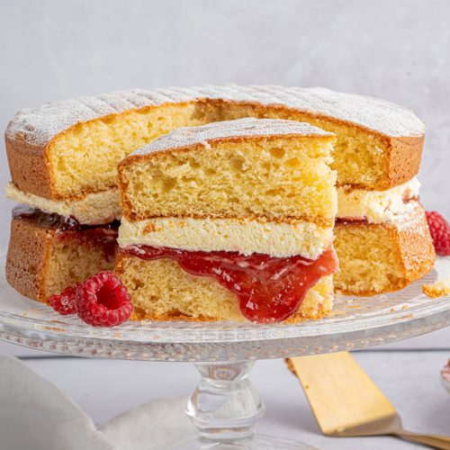

Victoria Sponge Cake

A traditional light and fluffy cake filled with fresh cream and tangy jam.
One of the most famous types of cake in the world, the Victoria Sponge Cake is a
timeless recipe that is
sure to satisfy anyone with a sweet tooth. Sponge cakes
have been around for hundreds of years, but this
particular type is named after Queen
Victoria of the United Kingdom.
Difficulty: Easy
Serves: 10
Preperation Time: 40 minutes
Cooking Time: 20 minutes
Ingredients:
For the batter:
- 200g caster sugar
- 200g softened butter
- 200g self-raising flour
- 4 eggs, beaten
- 2 tbsp milk
- 1 tbsp baking powder
For the filling:
- 170g high-quality strawberry jam
- 140g icing sugar
- 100g butter, softened
- A drop of vanilla extract (optional)
- Icing sugar, to decorate
Method:
-
Pre-heat your oven to 180C for fan ovens, otherwise 160C/Gas Mark 4. Butter
two 20cm sandwich
tins and line with non-stick baking paper.
-
In a large bowl, beat 200g caster sugar, 200g softened butter, 4 beaten eggs,
200g self-raising flour,
1 tsp baking powder and 2 tbsp milk together until
you have a smooth, soft batter.
-
Divide the mixture between the tins, smooth the surface with a spatula or
the back of a spoon.
-
Bake for about 20 mins until golden and the cake springs back when pressed.
When satisfied, turn
onto a cooling rack and leave to cool completely.
-
To make the filling, beat the 100g softened butter until smooth and creamy,
then gradually beat in
140g sifted icing sugar and a drop of vanilla extract
(if you’re using it).
-
Spread the buttercream over the bottom of one of the sponges. Top it with 170g
strawberry jam and
sandwich the second sponge on top.
-
Dust with a little icing sugar before serving. Keep in an airtight container
and eat within 2 days.
Return Home